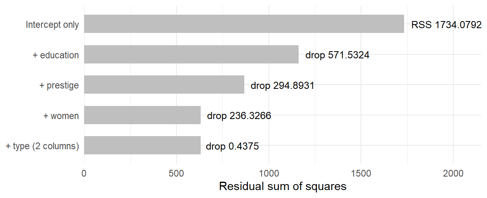
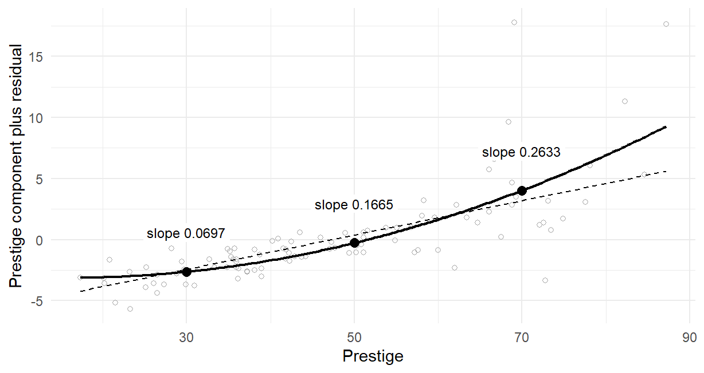
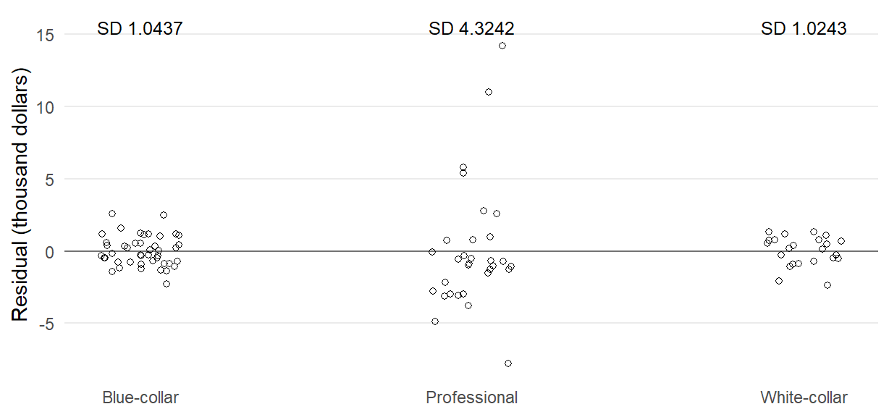
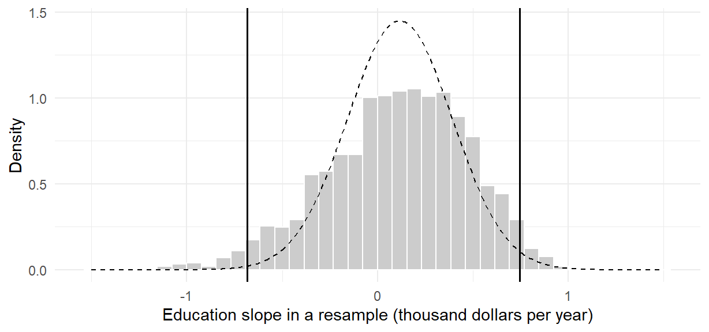
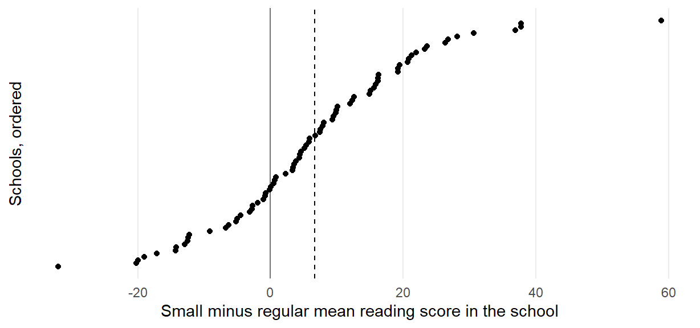

m0 <- lm(income_k ~ education, data = d)
m1 <- lm(income_k ~ education + prestige, data = d)
m2 <- lm(income_k ~ education + prestige + women + type, data = d)Multiple Regression II: Categorical Predictors, Model Comparison, Nonlinearity, and Robust Uncertainty
NoteChapter overview
Chapter 8 wrote one regression model for the occupation records. This chapter extends it in two directions: Sections 1–4 change or compare the mean part; Sections 5–7 recompute uncertainty when spread differs or pupils share a school. By the end, you will be able to read indicator coefficients and a declared contrast, explain covariance adjustment, compare models and predictors, interpret curvature and a logged outcome, and choose an uncertainty calculation for a stated reason. The occupation records, a randomized reading study, and Project STAR connect each method with the question it answers and the conditions it needs.
Chapter 8 asked how income differs with education when prestige, the percentage of women, and occupational type are held fixed. A report on the same 98 records usually needs more. How do the three types compare? Does a group of predictors add anything once the others are in? Is a straight line in prestige adequate, and should income be analyzed on its own scale? How far can the standard errors be trusted when professional incomes spread much more widely? We answer these questions on the same records, with income in thousand 1971 Canadian dollars and the type levels bc, prof, and wc. Two further studies join where these records cannot serve: a randomized reading study with a pretest (Section 2) and Project STAR (Section 7).
Recall Chapter 8’s model, with the conditions Chapter 7, Section 1.1, first stated for one predictor:
\[ Y_i=\beta_0+\sum_j\beta_jx_{ij}+\varepsilon_i,\qquad E(\varepsilon_i\mid\mathbf x_i)=0,\qquad \operatorname{Var}(\varepsilon_i\mid\mathbf x_i)=\sigma^2. \]
Its mean part gives the expected outcome at stated predictor values. Its error part says that errors average zero at every predictor profile, share one variance, and are independent across records; Normal errors additionally supply the exact \(t\) and \(F\) references. For the occupation model m2, with blue-collar as reference, the mean part is
\[ E(\mathrm{income}_k\mid e,p,w,\mathrm{type})=\beta_0+\beta_Ee+\beta_Pp +\beta_Ww+\delta_{\mathrm{prof}}D_{\mathrm{prof}} +\delta_{\mathrm{wc}}D_{\mathrm{wc}}. \]
Here \(e\), \(p\), and \(w\) are education, prestige, and the percentage of women; the two \(D\) columns indicate professional and white-collar types.
We work on these two parts in turn: indicators, covariance adjustment, model comparisons and transformations first; unequal spread and school-level dependence second. Short R demonstrations connect the model to its fitted comparisons and uncertainty.
Predictors That Are Categories
One indicator, then several
Chapter 7, Section 3.3, fitted a single 0/1 predictor to 24 invented feedback-by-practice scores. The fitted line passed through the two group means, its slope was their difference, 4 with SE 1.6967 and \(t=2.3575\) on 22 df, and that test was the equal-variance two-sample test written as a regression. The same idea extends to more than two groups.
A factor with \(J\) levels enters a regression as \(J-1\) indicator columns. One level is omitted and becomes the reference: the intercept is its fitted mean, and each indicator coefficient is a difference from it. With three occupation types and blue-collar as the reference,
\[ \widehat y_g=\widehat\beta_0+\widehat\delta_{\mathrm{prof}}D_{\mathrm{prof}} +\widehat\delta_{\mathrm{wc}}D_{\mathrm{wc}},\qquad \widehat\mu_{\mathrm{bc}}=\widehat\beta_0,\quad \widehat\mu_{\mathrm{prof}}=\widehat\beta_0+\widehat\delta_{\mathrm{prof}},\quad \widehat\mu_{\mathrm{wc}}=\widehat\beta_0+\widehat\delta_{\mathrm{wc}}. \]
Two indicators, not three, carry three means. A third column would equal the intercept column minus the other two, so the design matrix would lose full rank and no coefficient would be separately estimable. Which level is omitted is a choice of coordinates, not a choice of model.
The working data d retain the 98 occupations in carData::Prestige with a recorded type. Income divided by 1,000 gives income_k in thousand 1971 Canadian dollars, and the factor order is blue-collar, professional, then white-collar, so blue-collar is the reference. On these same rows, m0, m1, and m2 name the education-only, the education-and-prestige, and the full additive models:
The 98 records hold 44 blue-collar, 31 professional, and 23 white-collar occupations, and the full model fits six coefficients, leaving 92 residual degrees of freedom. The rows were chosen because their records are complete, not sampled at random from a labour market (Fox et al., 2022; Fox & Weisberg, 2019).
What the indicator coefficients mean
Fit income on type alone and read the coefficients against Figure 1. A blue-collar occupation carries 0 in both indicator columns, a professional one a 1 in the first, and a white-collar one a 1 in the second, so each type’s fitted value is the intercept plus that type’s coefficient.
group_fit <- lm(income_k ~ type, data = d)
coef(group_fit)(Intercept) typeprof typewc
5.374136 5.185315 -0.321832 ![Jittered open circles of income in thousand dollars for 44 blue-collar, 31 professional and 23 white-collar occupations, with a thick bar at each group mean, about 5.37, 10.56 and 5.05. A dashed horizontal line at the blue-collar mean runs across the plot. An upward arrow from the dashed line to the professional mean is labeled 5.1853 higher and a short downward arrow to the white-collar mean is labeled 0.3218 lower. Professional incomes spread from about 4.6 to 25.9 thousand dollars; the other two types stay below 9.](chapter_09_files/figure-html/fig-ch9-indicators-1.png)
The coefficients are 5.3741, 5.1853, and \(-0.3218\). The intercept is the blue-collar mean, the dashed line in the figure, and each coefficient is an arrow from that line to another type’s mean: professional occupations average 5.1853 thousand dollars more, white-collar occupations 0.3218 less. The fitted means, 5.3741, 10.5595, and 5.0523, are exactly the observed means, for the reason Chapter 8, Appendix A, gave: with one free parameter per group, least squares returns each group’s own mean. A group-only regression is therefore a description of three means, with no adjustment in it. The figure also shows the wide spread of professional incomes, from about 4.6 to 25.9 thousand dollars, which Section 5 takes up.
Keep this description apart from the full model. In m2 the professional and white-collar coefficients are 0.3242 and 0.2353: they compare fitted incomes at the same education, prestige, and percentage of women. The raw professional advantage of 5.1853 and the adjusted 0.3242 answer different questions, and neither is “the effect of occupational type”.
Changing the reference level
Releveling makes a different level the reference. Refit the group-only model with white-collar as the reference:
group_fit_wc <- lm(income_k ~ relevel(type, ref = "wc"), data = d)
coef(group_fit_wc) (Intercept) relevel(type, ref = "wc")bc
5.052304 0.321832
relevel(type, ref = "wc")prof
5.507147 The coefficients are now 5.0523, 0.3218, and 5.5071: the intercept is the white-collar mean, and the two coefficients measure the blue-collar and professional means from it. The fitted values and residuals are unchanged (Chapter 8, Appendix A); the same three means are reported in new coordinates. Releveling m2 in the same way gives intercept 0.6559, blue-collar \(-0.2353\), and professional 0.0889, while the education, prestige, and women coefficients stay exactly as they were.
Centering a continuous predictor (Chapter 7, Section 2.5, and Chapter 8, Appendix A), subtracting a constant such as its mean, is the same kind of change: it moves the profile the intercept describes and leaves every fitted value, residual, and substantive contrast alone. Neither operation adds information, such as the cross-type support the records lack, and “the professional coefficient” always means professional minus whichever level is currently the reference.
One-way analysis of variance as a regression
Chapter 4, Sections 2.2–2.4, compared one common mean with separate group means through between-group and within-group variation. In the group-only regression, equal means says that both indicator coefficients are zero. The between-group sum of squares is \(SS_B=595.9562\) on \(J-1=2\) degrees of freedom. The within-group sum of squares is the group-only model’s residual sum of squares, \(SS_W=1138.123\) on \(N-J=95\) degrees of freedom. The familiar calculation is
\[ F=\frac{MS_B}{MS_W}=\frac{SS_B/(J-1)}{SS_W/(N-J)} =\frac{595.9562/2}{1138.123/95}=24.8725,\qquad \eta^2=\frac{SS_B}{SS_T}=.3437. \]
The regression and ANOVA describe the same fitted means, so eta squared is also the group-only regression’s \(R^2\). Chapter 6, Sections 1.3 and 3.2, fitted and compared these kinds of models in R. Here the reduced model has only an intercept and the fuller one has two indicators; Section 3.1 generalizes their comparison.
anova(lm(income_k ~ 1, data = d), group_fit)| Res.Df | RSS | Df | Sum of Sq | F | Pr(>F) |
|---|---|---|---|---|---|
| 97 | 1734.079 | NA | NA | NA | NA |
| 95 | 1138.123 | 2 | 595.9562 | 24.87246 | 0 |
aov() returns the same statistic from the same fitted means, residual sum of squares, and degrees of freedom. The equality is algebraic: it holds whether or not group membership was randomized, so it supplies no causal warrant of its own. As in Chapter 4, the omnibus \(F\) says that the three means are not all equal but not which differ, and a comparison chosen after seeing it needs Chapter 4’s family calibration. A declared comparison needs no significant omnibus result first; the next subsection gives its calculation.
A contrast and its standard error
A linear contrast writes a comparison as a linear combination of coefficients, \(C=\mathbf c^{\mathsf T}\boldsymbol\beta\). For a comparison declared before the results are read, the estimate is that same combination of the fitted coefficients, and its variance uses the whole coefficient covariance matrix \(\widehat{\mathbf V}\):
\[ \widehat C=\mathbf c^{\mathsf T}\widehat{\boldsymbol\beta},\qquad \widehat{\operatorname{Var}}(\widehat C)=\mathbf c^{\mathsf T}\widehat{\mathbf V}\mathbf c,\qquad SE(\widehat C)=\sqrt{\mathbf c^{\mathsf T}\widehat{\mathbf V}\mathbf c}. \]
For a difference of two coefficients, the variance is the sum of their two variances minus twice their covariance. The group-only comparison makes the covariance visible. Professional minus white-collar is \(\widehat\delta_{\mathrm{prof}}-\widehat\delta_{\mathrm{wc}}=5.5071\), with \(\mathbf c=(0,1,-1)^{\mathsf T}\):
c_vec <- c(0, 1, -1)
V <- vcov(group_fit)
c(estimate = sum(c_vec * coef(group_fit)),
SE = sqrt(drop(c_vec %*% V %*% c_vec))) estimate SE
5.5071473 0.9525437 Both coefficients measure a group mean from the same blue-collar mean. If a sample overstates that reference mean, both coefficients fall together. Their covariance, 0.2723, is the variance of the shared mean, \(MS_W/44\). It drops out when the two coefficients are subtracted:
\[ \widehat{\operatorname{Var}}(\widehat C) =0.6587+0.7932-2(0.2723)=0.9073 =MS_W\left(\frac1{31}+\frac1{23}\right). \]
Thus the SE is 0.9525 and, with \(t_{.975,95}=1.9853\), the pointwise 95% interval is \([3.6161,\ 7.3982]\). Omitting the covariance gives an SE of 1.2049; adding the two SEs gives 1.7022, which is not the SE of this contrast. The covariance is part of the comparison, not a correction added after it.
The same formula applies to m2 with \(\mathbf c=(0,0,0,0,1,-1)^{\mathsf T}\): the estimate is 0.0889, its SE 1.08, and its pointwise 95% interval \([-2.0561,\ 2.2338]\) (\(t_{.975,92}=1.9861\)). Sections 1.2–1.3 explain why the raw 5.5071 becomes 0.0889 when education, prestige, and the percentage of women are held fixed. This interval covers zero and leaves the adjusted comparison unresolved; it is a working-model calculation among types with thin joint support (Chapter 8). Exercise 2 practices its covariance-based variance.
The vector \(\mathbf c\) states the question. One entry set to 1 returns an ordinary coefficient; weights on type coefficients with intercept weight zero express contrasts between group means in Chapter 4’s sense. The vector changes with the reference coding, but a named comparison does not: the releveled m2 in Section 1.3 gave 0.0889 directly. Declaring a comparison before reading its result governs the calibration, not whether it is a contrast. A comparison selected after inspecting the output needs the family calibration of Chapter 4, Section 3.3, whose R calculations appear in Chapter 6, Section 2.
Adjusted Group Comparisons: The Analysis of Covariance
A regression with one common slope
The occupation types differ in many ways at once. A randomized study with a baseline score lets the group question be asked more sharply. Baumann and colleagues randomly assigned 68 fourth-grade pupils in one school to three reading-instruction conditions (Baumann et al., 1992): DRA, a directed reading activity from the basal program; DRTA, a directed reading-thinking activity; and think-aloud strategy instruction. Each pupil took an error-detection test of comprehension monitoring before and after the lessons. carData::Baumann holds the 66 pupils with a recorded first posttest, 22 per group. We use the first pretest and posttest, with DRA as the reference; the investigators also analyzed further outcomes and both pretests.
The analysis of covariance adds the pretest to the group comparison as one more predictor with a single slope:
\[ Y_{ij}=\mu_j+\beta(X_{ij}-\bar X)+\varepsilon_{ij},\qquad \bar Y_j^{\,\mathrm{adj}}=\bar Y_j-\widehat\beta(\bar X_j-\bar X). \]
Here \(Y_{ij}\) and \(X_{ij}\) are the posttest and pretest of pupil \(i\) in group \(j\). The group terms \(\mu_j\) shift the line up or down, and the pretest enters once, so every group’s line has the same slope \(\beta\). An adjusted mean is a group’s fitted mean at a stated pretest value. At the grand pretest mean \(\bar X\) it is the observed posttest mean \(\bar Y_j\) moved along the common slope by the group’s pretest departure from \(\bar X\), the second equation.
The working data reading hold these 66 pupils, all with recorded first pretests and posttests. The package’s group codes Basal, DRTA and Strat are labeled DRA, DRTA and Think-aloud, with DRA as the reference. The prediction below evaluates each group’s line at the grand pretest mean.
ancova <- lm(post.test.1 ~ group + pretest.1, data = reading)
coef(ancova) (Intercept) groupDRTA groupThink-aloud pretest.1
-0.5966478 3.6265538 2.0361644 0.6931872 grand <- data.frame(group = levels(reading$group),
pretest.1 = mean(reading$pretest.1))
predict(ancova, newdata = grand, interval = "confidence") fit lwr upr
1 6.188185 5.143481 7.232889
2 9.814739 8.779995 10.849482
3 8.224349 7.181274 9.267425![Gray points for DRA (circles), DRTA (triangles) and Think-aloud (squares) pupils, pretest from 4 to 16 and posttest from 1 to 15, slightly jittered. Three parallel fitted lines with slope about 0.69 run from pretest 6 to 14: DRTA highest, Think-aloud in the middle and DRA lowest. A vertical line marks the grand pretest mean 9.79, where open symbols mark the adjusted means. The DRA mean, a filled circle at pretest 10.5 and posttest 6.68, moves down its line to 6.19; the Think-aloud mean, at 9.14 and 7.77, moves up to 8.22; the DRTA mean, at 9.73 and 9.77, barely moves, to 9.81, so its filled and open triangles almost coincide.](chapter_09_files/figure-html/fig-ch9-ancova-1.png)
Read Figure 2 from each filled symbol, a group’s observed pretest and posttest means, to the open symbol on the vertical line, its adjusted mean. DRA happened to start highest, 0.7121 points above the grand pretest mean of 9.7879, so following its line to the grand mean lowers its posttest mean by \(0.6932\times0.7121\), from 6.6818 to 6.1882. Think-aloud started 0.6515 points below and rises from 7.7727 to 8.2243, while DRTA, almost at the grand mean, barely moves, from 9.7727 to 9.8147. The fit gives the common slope 0.6932 (SE 0.1015), differences from DRA of 3.6266 (SE 0.7362) for DRTA and 2.0362 (SE 0.7450) for Think-aloud, and a residual mean square of 5.894 on 62 degrees of freedom. Tested together after the pretest, the two group coefficients give \(F(2,62)=12.1689\), \(p<.0001\), a comparison of named models as in Chapter 6, Section 3.2, whose statistic Section 3.1 below develops. The adjusted means have 95% intervals \([5.1435,\ 7.2329]\), \([8.7800,\ 10.8495]\), and \([7.1813,\ 9.2674]\).
Three conditions carry that reading. The adjusted means need a common reference, here the grand pretest mean. The reference must lie inside every group’s observed pretest range, the common support: the pretests run from 4 to 16, 6 to 16, and 4 to 14, so the lines are drawn over 6 to 14, and a comparison read outside that band would rest on extrapolation. And the comparison needs a stated averaging population: for this additive model, predicting every group at the grand pretest mean gives the same values as predicting every group at each of the 66 pupils’ pretests and averaging. Because the lines are parallel, the adjusted differences, 3.6266 and 2.0362, are the same at any pretest value inside the common support; the adjusted means are not, which is why the reference value is stated.
Three analyses of a pretest–posttest study
A randomized pretest–posttest study is often analyzed in one of three ways: compare the posttest means, compare the gains (posttest minus pretest), or adjust for the pretest as above. The three are one regression that differs only in the pretest coefficient \(\gamma\):
\[ Y_i-\gamma X_i=\beta_0+\delta_{\mathrm{DRTA}}D_{\mathrm{DRTA},i} +\delta_{\mathrm{TA}}D_{\mathrm{TA},i}+\varepsilon_i,\qquad \gamma=0,\ 1,\ \text{or estimated}. \]
With \(\gamma=0\) the model compares posttest means, with \(\gamma=1\) it compares gains, and with \(\gamma\) estimated it is the analysis of covariance. In R, offset() enters the pretest with its coefficient fixed at 1:
post_only <- lm(post.test.1 ~ group, data = reading)
gain <- lm(post.test.1 ~ group + offset(pretest.1), data = reading)Under random assignment the expected pretest difference between groups is zero. Subtracting a fixed multiple of the pretest therefore preserves the average group-comparison target. Under the common-slope working model, covariance adjustment estimates that same comparison while estimating the pretest slope from the records. Random assignment covered the 68 pupils assigned, while the analyses use the 66 with a recorded first posttest, so the argument also needs a complete-record condition, for example that the two posttests went missing for reasons unrelated to what those pupils would have scored, which the design does not guarantee and the records cannot check.
| Analysis | Pretest coefficient | DRTA minus DRA (SE) | Think-aloud minus DRA (SE) | Residual SD (df) |
|---|---|---|---|---|
| Posttest only | 0 | 3.0909 (0.9614) | 1.0909 (0.9614) | 3.1885 (63) |
| Gain score | 1 | 3.8636 (0.7779) | 2.4545 (0.7779) | 2.5799 (63) |
| Analysis of covariance | 0.6932, estimated | 3.6266 (0.7362) | 2.0362 (0.7450) | 2.4278 (62) |
The three analyses differ in precision and in how this sample’s chance pretest imbalance enters. The pretest means are 10.5000, 9.7273, and 9.1364, so DRA had a head start of 0.7727 points over DRTA, about a quarter of the pretest SD of 3.0205 across all 66 pupils. The size of that gap is what matters. A significance test of it would add nothing: random assignment already makes any baseline gap a chance gap, so the test would examine a null hypothesis known to be true. The gap accounts exactly for the spread of the estimates in Table 1: each DRTA estimate is the posttest-only difference plus \(\gamma\) times DRA’s head start, \(3.0909+\gamma(10.5-9.7273)\), which gives 3.0909, 3.8636, and 3.6266 (3.6265 from the rounded inputs).
Estimating the coefficient leaves the smallest residual SD, 2.4278 against 3.1885 and 2.5799, and the smallest standard errors, because the pretest predicts the posttest with a slope near 0.7 rather than 0 or 1. The choice belongs in the analysis plan, made before the outcomes are seen, not after comparing the three estimates.
Parallel slopes and the limits of adjustment
A common slope is a condition, not a finding. The check adds the group-by-pretest product block, which lets each group have its own slope, and compares the two named models on the same records (Chapter 6, Section 3.2; Section 3.1 below develops the general statistic):
varying_slopes <- lm(post.test.1 ~ group * pretest.1, data = reading)
anova(ancova, varying_slopes)| Res.Df | RSS | Df | Sum of Sq | F | Pr(>F) |
|---|---|---|---|---|---|
| 62 | 365.4307 | NA | NA | NA | NA |
| 60 | 347.9697 | 2 | 17.46099 | 1.505389 | 0.2301931 |
The product block gives \(F(2,60)=1.5054\), \(p=.2302\), with group slopes of 0.4663 (DRA), 0.6868 (DRTA), and 0.8768 (Think-aloud). These 66 records do not distinguish the two models, which is not the same as showing that the slopes are equal. When slopes do differ, an adjusted difference depends on the pretest value at which it is read; Chapter 10 develops that varying-slope model as an interaction.
What adjustment supplies depends on how the groups were formed. In groups formed by random assignment, the pretest only sharpens a comparison that the design already warrants. In observational groups, a fitted comparison at a common covariate value cannot balance what was not measured. In Section 1.2 the professional advantage fell from 5.1853 to 0.3242 at fixed education, prestige, and percentage of women, but neither number was an effect of type. A covariate measured with error can leave part of the baseline difference unadjusted (Chapter 14, Section 5.1); and a covariate recorded after the groups formed can remove part of the effect being estimated.
Lord’s paradox makes the point with intact groups that differ at baseline (Lord, 1967). The gain-score analysis asks whether the groups changed by different amounts; the covariance analysis asks whether pupils with the same pretest ended differently. The two can reach opposite conclusions from the same records, partly through the regression toward the mean of Chapter 7, Section 7.2: groups that start apart each regress toward their own mean. Neither analysis says which question is the causal one; the design does, and Chapter 14 returns to what a design supplies that adjustment cannot.
Comparing Models and Predictors
Comparing residual sums of squares
Chapter 4 compared one common mean with group means (Sections 2.2–2.3) and additive with interaction models (Section 4.4); Chapter 6 fitted those comparisons in R (Sections 1.3 and 3.2). This section develops the general question on the occupation records: what does each mean part permit, and what restrictions distinguish them? Two models are nested when the reduced model is the fuller model with some coefficients set to zero, and both are fitted to the same records and outcome. Extra coefficients never raise the residual sum of squares; the question is whether they lower it by more than noise alone would. The extra-sum-of-squares statistic compares the two residual sums of squares:
\[ F=\frac{(RSS_{R}-RSS_{F})/q}{RSS_{F}/(n-p)}. \]
The numerator is the drop that the \(q\) extra coefficients buy, per coefficient. The denominator is the fuller model’s residual mean square, with \(p\) its number of coefficients: the same \(s^2\) that appears in every classical standard error. When the reduced-model restrictions hold, under the Normal linear model with independent common-variance errors, the ratio has an exact central \(F\) reference with \(q\) and \(n-p\) degrees of freedom.

Figure 3 shows what each addition buys in the occupation models. Education buys 571.5324 of the total 1734.0792, and prestige a further 294.8931. The percentage of women then buys 236.3266 for one coefficient, while the two type columns buy only 0.4375 for two. Against the full model’s residual mean square of 6.8575, the type block’s 0.4375 over two coefficients gives \(F(2,92)=0.0319\). Section 3.2 sets this beside the women-and-type comparison in Table 2. The subtraction means something only when both models use the same rows and the same outcome, which is why every comparison in this chapter runs on the same 98 records.
The overall regression test is the special case whose reduced model is the intercept alone, with all \(p-1\) non-intercept coefficients set to zero. Chapter 8, Section 3.3, gave its formula and read it from summary(m2)$fstatistic: \(F(5,92)=32.1747\) for the full model and \(F(1,96)=47.1956\) for the education-only model on the same records. The larger value is not evidence that m0 is better, because the two statistics test different restrictions. Neither checks the mean function, and neither says how a fitted rule would predict new records (Chapter 13). The same statistic can also test any \(q\) linear restrictions on one fitted model without fitting the reduced model; Appendix A develops that form.
Testing a block of coefficients
A block test applies the preceding statistic to a declared set of coefficients jointly. Two blocks ask different questions on these same 98 records: do women and type add to education and prestige, and does type add once women is already present?
no_type <- lm(income_k ~ education + prestige + women, data = d)
anova(m1, m2)
anova(no_type, m2)Adding the percentage of women and the two type indicators to m1 tests three restrictions against the full model’s 92 residual degrees of freedom; dropping type from the full model tests two restrictions against the same denominator.
| Added | df | \(F\) | \(p\) |
|---|---|---|---|
| Women and type | 3 | 11.5088 | \(<.0001\) |
| Type after women | 2 | 0.0319 | .9686 |
The first block is strongly supported: \(F(3,92)=11.5088\) against a 5% critical value of 2.7036. The second is not: \(F(2,92)=0.0319\), \(p=.9686\), against 3.0954. Joint evidence for the first block does not show that each added column contributes; the percentage of women could carry the whole block. The second result does not show that occupational type is irrelevant: once education, prestige, and the percentage of women are in the equation, the two type indicators reduce the residual sum of squares by almost nothing on these 98 records, where the types barely overlap on the other predictors.
A single anova(m2) answers a different question. It gives sequential sums of squares: each line tests a term given only the terms above it in the formula, so the answers depend on the order of the formula, and only the last line matches a block test. Section 5.2 gives the robust version of the type block.
Information criteria: AIC and BIC
A nested \(F\) test compares two models when one contains the other. Information criteria can also rank models that are not nested, using a different quantity: the maximized likelihood, penalized for the number of fitted parameters.
Chapter 8, Appendix B, built that likelihood for these models from independent Normal outcomes around the regression. Maximizing it over the coefficients reproduces least squares. Its scale estimate divides the residual sum of squares by \(n\), \(\sqrt{RSS/n}=2.5373\), where the residual SD reported by lm() divides by the residual degrees of freedom, \(\sqrt{RSS/(n-p)}=2.6187\). AIC adds \(2k\) to \(-2\log\widehat L\) and BIC adds \(k\log n\), where \(k\) counts the fitted coefficients and the residual variance, so m2 has \(k=7\), not 6. One call returns all three quantities:
c(logLik = logLik(m2), AIC = AIC(m2), BIC = BIC(m2)) logLik AIC BIC
-230.3020 474.6040 492.6988 For m2 the call returns \(-230.3020\), 474.6040, and 492.6988. Chapter 8, Appendix B, tabulates m0, m1, and m2. The new use here compares candidates that are not nested: income on education and the percentage of women (AIC 486.3288, BIC 496.6687), and income on prestige and the percentage of women (AIC 469.3428, BIC 479.6827). Neither model contains the other, so no nested \(F\) compares them. Both have \(k=4\); the penalties cancel, and the criteria prefer prestige with women because it fits these records better.
Set m2 beside that pair: its AIC 474.6040 and BIC 492.6988 are both higher than the prestige-and-women model’s. Its three further coefficients, education and the two type indicators, do not buy enough fit to pay their penalty. Section 3.2’s type block and Section 3.4’s education comparison show why. Adjusted \(R^2\) gives the same order: .5549, .6257, and .6164 for education with women, prestige with women, and m2. A ranking is always relative to the candidates offered.
The two criteria charge differently for parameters. For the seven parameters of m2, BIC charges \(7\log 98=32.0948\) instead of AIC’s 14, because at \(n=98\) the factor \(\log n=4.585\) exceeds 2, so the criteria can disagree; a disagreement shows how strongly the extra parameters are charged, not a tie to break by preference. The criteria are comparable only among models fitted to the same records, with the same outcome on the same scale, under one likelihood convention; Section 4.2 shows a change of scale breaking the comparison. Both are calculated on the records that fitted the models, so neither is a held-out error, and both are comparative: a smaller AIC says one candidate is preferred to another, not that either describes the records well (Akaike, 1974; Schwarz, 1978). Chapter 11 develops likelihood fully.
What each predictor adds
Raw slopes use different units. The education slope, 0.1164 thousand dollars per year, looks similar to the prestige slope, 0.1406 per rating point, but a year and a point are different changes. Their predictor SDs are 2.7489 years and 17.0949 points; the percentage of women’s SD is 31.382 percentage points and income’s is 4.2281 thousand dollars. Two summaries answer different questions:
\[ \beta_j^{*}=\widehat\beta_j\frac{s_{x_j}}{s_y},\qquad \Delta R^2_j=R^2_{\mathrm{full}}-R^2_{\mathrm{without}\ j}. \]
A standardized coefficient, or beta weight, rescales a partial slope into outcome-SD units per predictor SD. The values are 0.0757 for education, 0.5685 for prestige, and \(-0.3971\) for women. This differs from Chapter 8’s standardization over named profiles: that operation averages fitted outcomes over a stated population, while these beta weights change the units of slopes. Their values depend on the spread of the predictors in these particular records.
A drop-one \(R^2\) asks how much of the full model’s explained variation disappears when one predictor is removed. From the full \(R^2=.6362\), the drops are .0007 for education, .0625 for prestige, and .1212 for women. Each is Section 3.2’s one-column block comparison on a different scale: the corresponding \(F(1,92)\) values are 0.1790, 15.8070, and 30.6593, each the square of its coefficient’s \(t\). Education’s near-zero drop describes the same limited unique contribution as its wide coefficient interval.
Neither summary measures importance. Restricted predictor ranges can shrink standardized coefficients. Overlapping predictor information means that the drop-one values need not sum to the joint \(R^2\); a predictor that duplicates another can contribute almost nothing uniquely while still being substantively relevant. Neither summary establishes a causal ranking or held-out value. Name the comparison before reading the number.
Changing a Predictor’s Form or the Outcome’s Scale
Adding a squared term
In every model so far, a continuous predictor’s slope was the same at every value of that predictor. Chapter 8, Section 4.3, refitted the full model with a squared prestige term, and that refit is the worked example here. It was a check on functional form declared before it was run, not a search across candidate terms for the smallest p-value; a p-value read after such a search would not mean what it appears to mean. A squared term is one kind of polynomial term, a power of a predictor entered as an ordinary extra column, here I(prestige^2), and the model is still linear in its coefficients. What changes is the reading:
\[ E(Y\mid x,\ldots)=\beta_0+\beta_1x+\beta_2x^2+\cdots,\qquad \frac{\partial E(Y)}{\partial x}=\beta_1+2\beta_2x,\qquad x^{*}=-\frac{\beta_1}{2\beta_2}. \]
The predictor’s slope now depends on its own value, \(\beta_1+2\beta_2x\), and is zero at the turning point \(x^{*}\).
m2q <- lm(income_k ~ education + prestige + I(prestige^2) + women + type,
data = d)
anova(m2, m2q)| Res.Df | RSS | Df | Sum of Sq | F | Pr(>F) |
|---|---|---|---|---|---|
| 92 | 630.8897 | NA | NA | NA | NA |
| 91 | 587.4085 | 1 | 43.48117 | 6.736004 | 0.0110146 |

The quadratic coefficient is 0.0024 with SE 0.0009 and \(t=2.5954\); the one-restriction block test gives \(F(1,91)=6.736\) with \(p=.011\); and the criteria move from 474.6040 and 492.6988 to 469.6058 and 490.2855. The education coefficient changes from 0.1164 to \(-0.0298\), a reminder that each coefficient is defined relative to the other columns present.
Figure 4, Chapter 8’s component-plus-residual display with the fitted curve added, shows what the squared term claims. With linear coefficient \(-0.0754\) and quadratic coefficient 0.0024, the curve’s slope is 0.0697 thousand dollars per prestige point at prestige 30, 0.1665 at 50, and 0.2633 at 70: income rises with prestige throughout the records, and faster at the top, where the straight line falls below several high-prestige occupations. The turning point, 15.5906, lies below the smallest observed prestige of 17.3, so the falling branch of the parabola is outside the records. The coordinate \(-0.0754\) is the slope at prestige zero, a value no occupation has, so it is not a “negative prestige effect”.
Centering fixes that reading without changing the curve, because it is a change of coordinates. Prestige and its square correlate .9849; centering prestige at its mean, 47.3276, before squaring lowers that correlation to .3216. The quadratic coefficient and its SE stay 0.0024 and 0.0009, and every fitted value stays the same. The linear coefficient becomes 0.1536 with SE 0.0347: the slope at mean prestige, a different quantity from the slope at prestige zero, whose SE is about 2.6 times as large. The smaller SE belongs to a slope read in the middle of the records, not to a sharper estimate of the old one.
A log-transformed outcome
Changing a predictor’s form keeps the question. Changing the outcome’s scale changes it.
\[ \log Y_i=\beta_0+\sum_j\beta_jx_{ij}+\varepsilon_i,\qquad 100\,(e^{\beta_j}-1)\ \text{percent per unit of } x_j . \]
A coefficient in a log-income model is an additive difference in expected log income. Exponentiating turns it into a multiplicative difference in geometric-mean income under that model, and \(100(e^{\widehat\beta}-1)\) expresses the multiplier as a percentage. The geometric mean is not the arithmetic mean, so this is not automatically a statement about average income in dollars.
m_log <- lm(log(income) ~ education + prestige + women + type, data = d)
100 * (exp(coef(m_log)[c("education", "prestige", "women")]) - 1) education prestige women
0.7660700 2.0964846 -0.8429719 | Term | Log coefficient | Percent | Lower | Upper |
|---|---|---|---|---|
| education | 0.0076 | 0.7661 | \(-4.2041\) | 5.9941 |
| prestige | 0.0207 | 2.0965 | 1.4351 | 2.7622 |
| women | \(-0.0085\) | \(-0.8430\) | \(-1.0189\) | \(-0.6667\) |
One more prestige point is associated with about 2.0965 percent higher geometric-mean income at the same education, percentage of women, and type, with interval \([1.4351,\ 2.7622]\) percent; one more percentage point of women with about \(-0.843\) percent. The two type coefficients, \(-0.0137\) and 0.0708 on the log scale, are \(-1.3584\) and 7.3341 percent. The intervals in Table 3 are the classical log-scale intervals with both endpoints transformed, which is legitimate because the transformation is monotone.
The criteria do not carry across this change. This model’s AIC is 8.091 against 474.604 for m2, and the difference means nothing: the two likelihoods are densities of different response variables. Keep the outcome and the question fixed inside any comparison, and treat a change of scale as a new question rather than as data cleaning (Fox & Weisberg, 2019).
On the log scale, the professional residual SD is 0.3276, against 0.1937 for blue-collar and 0.1607 for white-collar occupations. On the income scale the corresponding SDs are 4.3242, 1.0437, and 1.0243. The new scale evens the spread only partly, and also changes the question. The next section keeps the question and changes the uncertainty.
Robust Standard Errors for Unequal Spread
The first half changed or compared the mean part. This half keeps that mean part and revisits the error conditions: classical standard errors rested on independent records and one common error variance. We first reconsider unequal spread, then dependence within schools. These sections can be read after Chapter 8 using the same occupation model.
Unequal spread and HC3 standard errors
Every classical standard error so far assumed one common error variance for all 98 occupations. Keep the same records and fitted mean, but allow each record to contribute a different error variance. Must every coefficient’s SE grow? Which fitted quantities would change? Use the residual pattern and the SE comparison below to check the prediction.
Figure 5 shows why one common variance is doubtful here.

The residuals of professional occupations spread about four times as widely as the others: their SD is 4.3242 thousand dollars against 1.0437 for blue-collar and 1.0243 for white-collar occupations. A single \(s^2\) averages these spreads, so it overstates the uncertainty contributed by some rows and understates it for others.
A short graph shows the same comparison: resid(m2) supplies the fitted residuals, and type puts each occupation in its group. The finished figure adds a zero line, labels and a small horizontal displacement so that overlapping points remain visible.
library(ggplot2)
ggplot(d, aes(type, resid(m2))) + geom_point()HC3 replaces the single pooled variance by each row’s squared residual, adjusted for its leverage: how unusual its predictor profile is relative to the other records. That adjustment allows for the smaller fitted residuals high-leverage rows can produce. The coefficient covariance combines these row contributions with the same predictor information used in the fit (Long & Ervin, 2000; MacKinnon & White, 1985; White, 1980; Zeileis, 2004). Appendix A derives the estimator.
The following call compares the two SE calculations on the same m2. vcov() supplies the classical coefficient covariance, diag() extracts its variances, and their square roots are the SEs. vcovHC() replaces that covariance by HC3; the fitted coefficients are unchanged.
V_hc3 <- sandwich::vcovHC(m2, type = "HC3")
V_classical <- vcov(m2)
se_classical <- sqrt(diag(V_classical))
se_hc3 <- sqrt(diag(V_hc3))
cbind(classical = se_classical, HC3 = se_hc3)The professional coefficient’s SE grows by about 43%, from 1.4631 to 2.0928, while the white-collar SE grows by about 7%, from 0.9848 to 1.0548. The education SE grows from 0.2752 to 0.3823, with robust 95% interval \([-0.6429,\ 0.8758]\): wider, with the same reading of an imprecise comparison. The SE for the percentage of women falls, from 0.0097 to 0.0079. The direction depends on how the residual spread and predictor profiles combine; wide spread in one group alone cannot tell us that every SE will rise.
The prediction therefore needs two distinctions. HC3 changes the covariance, so it can raise or lower an SE; every coefficient, fitted value and residual stays exactly what it was. Switching estimators after seeing which gives the preferred conclusion turns a stated method into a selection. For Section 1.5’s group-only contrast, professional incomes spread about 2.8 times as widely as the least spread type, and HC3 raises the SE from 0.9525 to 1.0733.
A robust block test
A joint Wald test measures how far the fitted type coefficients lie from zero in units of their estimated covariance, divided by the number of restrictions. Appendix A gives its matrix form; with the classical covariance it reproduces Section 3.2’s block \(F\). Substituting \(\widehat{\mathbf V}_{\mathrm{HC3}}\) for \(\widehat{\mathbf V}\) gives an approximate Wald version of the same block test: for the type block, 0.0345 with \(p=.9661\), against the classical 0.0319 and .9686. Here the substitution changes nothing of substance, because the type coefficients sit close to the restriction, each within a quarter of its classical SE of zero, so both statistics are near zero and far below the .05 critical value, 3.0954. A change of covariance matters most when a statistic lies near its critical value. The two also differ in kind: the classical statistic has an exact \(F_{2,92}\) reference under the Normal linear model, while the robust one has only an approximate reference, justified as the sample grows, not the exact finite-sample result of Section 3.2’s test.
Limits of robust standard errors
HC3 has one job: under a linear conditional mean and independent observations, it estimates the coefficient covariance without assuming a common error variance. Several problems lie outside that job.
- Curvature. If the mean function is wrong, the coefficients estimate a different quantity (Appendix A names it), and a robust covariance describes that quantity’s variability without making it the quantity of interest.
- Dependence. Rows that are not independent break the estimator’s own derivation. Section 7 shows a robust row-level SE and a naive one agreeing closely while both understate the uncertainty by nearly half.
- Selection and causal identification. Selection and missing outcomes change what the records represent, and causal identification comes from the design or from an argument about the conditioning set.
- Measurement error. With one predictor, independent classical measurement error attenuates its slope toward zero by the predictor’s reliability; with several predictors the direction of bias can differ. A different covariance estimator does not repair measurement error (Cohen et al., 2003). Independent mean-zero error in the outcome widens the residual spread and the standard errors but leaves the slope’s target unchanged. Chapter 14, Section 5.1, develops attenuation.
- Thin support. The type contrast’s robust SE of 1.1827 is still the uncertainty of a comparison the records barely observe.
A report therefore names the covariance estimator and the reason for it, and keeps these limits attached to the answer.
Resampling the Records
Choosing what to resample
Every uncertainty statement so far came from a formula: a coefficient covariance matrix, classical or robust, propagated through a linear combination. The bootstrap offers a different approximation: refit the model to many resamples of the records and read the spread of the refitted estimates directly (Davison & Hinkley, 1997; Efron, 1979; Efron & Tibshirani, 1993). What to resample is an assumption, not a default.
Chapter 3, Appendix B, described the procedure: draw records with replacement, refit, repeat, and read the spread of the estimates. Here we choose case resampling, drawing whole occupation records, for two reasons. Their predictors were not designed, so records and predictors are naturally treated as sampled together. And their residual spread differs by type (Figure 5), which resampling whole rows preserves without one common error distribution (Freedman, 1981). Appendix B compares the residual and wild schemes, which hold the design fixed and model the errors, on these same targets.
Case resampling for the full model
Resample the 98 rows with replacement, refit m2, and keep the education slope. Each selected row brings its outcome and all its predictors with it. One repetition can be shown in three lines: rows names the selected records, and update() refits the same model formula on those records.
set.seed(90909)
rows <- sample.int(nrow(d), replace = TRUE)
coef(update(m2, data = d[rows, ]))["education"]Repeat this operation \(B=2000\) times and collect the slopes in boot_education. Their SD estimates the slope’s sampling SE; their 2.5th and 97.5th percentiles supply the percentile interval. The seed 90909 and repetition count belong in the record because another set of resamples gives slightly different summaries.
sd(boot_education)
quantile(boot_education, c(.025, .975))A histogram makes the repeated slopes visible. Its vertical scale is density, so it can be compared with the Normal reference curve added in Figure 6. The simpler call shows the same resampling histogram without the reference curve and interval lines.
ggplot(data.frame(slope = boot_education), aes(slope)) +
geom_histogram(aes(y = after_stat(density)), bins = 40)
Figure 6 is the resampling distribution itself. The 2,000 refitted slopes spread more widely than the Normal curve built from the classical SE: their SD, the bootstrap SE, is 0.3699, and their middle 95%, the percentile interval, runs from \(-0.683\) to 0.744. The same resamples give the other two targets of Table 4, the professional-minus-white-collar contrast and the professional coefficient. A resample could omit a whole occupational type and lose a type coefficient; all 2,000 resamples here contained all three types, so all 2,000 refits are usable.
| Target | Estimate | Classical SE | HC3 SE | Bootstrap SE | Percentile 2.5% | Percentile 97.5% |
|---|---|---|---|---|---|---|
| Education slope | 0.1164 | 0.2752 | 0.3823 | 0.3699 | \(-0.6830\) | 0.7440 |
| prof \(-\) wc | 0.0889 | 1.0800 | 1.1827 | 1.1187 | \(-1.9613\) | 2.4313 |
| prof coefficient | 0.3242 | 1.4631 | 2.0928 | 1.9926 | \(-3.1416\) | 4.5443 |
Read the table one row at a time. The education slope’s bootstrap SE of 0.3699 sits between the classical 0.2752 and the HC3 0.3823: three calculations, one conclusion that this comparison is imprecise. The type contrast’s bootstrap SE of 1.1187 exceeds the classical 1.0800, with percentile interval \([-1.9613,\ 2.4313]\). The professional coefficient moves most, from a classical 1.4631 to 1.9926, close to the HC3 2.0928: with only 31 professional occupations spreading as widely as Figure 5 shows, a resample’s composition matters.
Agreement between HC3 and the bootstrap is not independent confirmation: both work on the same 98 records. And a different seed would move the last decimal of a bootstrap summary, which is why the seed and \(B=2000\) are reported.
Bootstrap intervals and their limits
The normal-approximation interval uses the resampling distribution only for its spread: the original estimate plus and minus 1.96 bootstrap standard errors. For the professional-minus-white-collar contrast it is \([-2.1038,\ 2.2815]\), beside the percentile interval \([-1.9613,\ 2.4313]\). The endpoints tend to be close when the resampling distribution is approximately Normal and centered near the estimate. Here the three distributions have skewness \(-0.3891\), 0.2635, and 0.3785, read by their sign as in Chapter 2, Section 2.1: the education slopes have the slightly longer left tail visible in the figure, the other two a slightly longer right tail, and the asymmetry is mild enough that the two kinds of endpoint agree closely. For a strongly skewed or biased resampling distribution, bootstrap-\(t\) and BCa intervals are the higher-order alternatives; Appendix B defines both in words.
What resampling assumes matters more than which interval is chosen. Drawing occupations with replacement treats them as independent and exchangeable, and there are reasons to doubt both: the occupations share one historical labour market, where common conditions can move related incomes together; the 98 rows were chosen by complete records rather than sampled at random; and their measurements are aggregates over workers. Resampling does not repair thin cross-type support, correct the measurement problems Chapter 8 documented, or make an observational comparison causal. And when a design has clusters, strata, or weights, the resampling unit has to follow the design rather than the rows, which is where the next section begins.
Clustered Data: Project STAR
The occupation records were observational, and the reading study was a small experiment in one school. Project STAR is a large experiment of a different shape: kindergarten pupils were randomized to class types within their schools. The randomization supports reading the class-type comparison as an assignment comparison, and the schools make pupils’ outcomes dependent, which the uncertainty calculation has to follow.
The study and its question
The question is specific:
Among eligible kindergarten pupils in the participating Tennessee schools, what was the mean reading-score difference under assignment to a small rather than a regular class?
The outcome is readk, an end-of-kindergarten reading scale score, and the field stark records the kindergarten class-type condition. Reading the small-versus-regular comparison as an assignment comparison rests on the documented protocol, not on the column name or the lm() call: random assignment occurred within participating schools (Finn & Achilles, 1990; Mosteller, 1995). The regular-with-aide arm lies outside this two-arm comparison and is excluded by design.
Three limits come with the question. Class type is not a measured headcount, so the analysis estimates no dose response in pupils per room. The distributed field does not verify each pupil’s original assignment; an assignment-effect reading also requires linking the recorded type to the assignment record and checking switches, which this teaching reanalysis does not do. And the target is the pupil-weighted mean assignment effect for the eligible cohort, which a common coefficient from a complete-record model reaches only through a further link: a common effect across schools or an explicit weighting argument.
The data are distributed as AER::STAR, accompanying Applied Econometrics with R and following the version used by Stock and Watson (Kleiber & Zeileis, 2008; Stock & Watson, 2007). They are loaded from the package, and the analysis is retrospective rather than preregistered.
Which records enter the analysis
A record can be absent from an analysis for two different reasons, and they are kept apart. Pupils who entered the study after kindergarten have no kindergarten condition: their absence is structural ineligibility. Eligible kindergarten pupils whose reading score or covariates were not recorded are missing, and missingness can distort a comparison. Only the variables a calculation uses enter its complete-record rule, so a missing mathematics score (mathk) does not exclude a usable reading record.
| Stage | \(n\) |
|---|---|
| Distributed records | 11,598 |
| Kindergarten condition recorded | 6,325 |
| Eligible small or regular | 4,094 |
| Eligible, reading observed | 3,745 |
| Complete primary records | 3,735 |
| Primary regular | 2,001 |
| Primary small | 1,734 |
| Primary schools | 79 |
The 5,273 records without a kindergarten condition are later entrants, not failed measurements; Chapter 2, Section 1.3, explains why such ineligibility and missing values need different denominators. Among the 4,094 eligible two-arm records, 349 lack a reading score. Ten more of the 3,745 observed-reading records lack a covariate, leaving 3,735 primary records in 79 schools, held in star_df in the code. Complete-record inference assumes that, given the declared covariates and within arm and school, whether a score was recorded does not depend on the score itself. Similar missing percentages across arms do not establish that condition. The 3,745 observed-reading records remain a declared sensitivity analysis.
The arm difference, unadjusted and adjusted
Section 1.1’s identity applies unchanged. With \(D_i=1\) for the small arm and 0 for regular,
\[ \widehat Y_i=\widehat\beta_0+\widehat\delta D_i,\qquad \widehat\beta_0=\bar Y_{D=0},\qquad \widehat\delta=\bar Y_{D=1}-\bar Y_{D=0}=440.5474-434.7323=5.8151. \]
On the 3,745 observed-reading records the slope reproduces the arm difference of 5.8151 reading points exactly, as Chapter 7’s binary predictor did for 24 students. The identity is algebraic; randomization adds the reason to read the difference as an assignment comparison.
Two cautions attach to the number. Treating the rows as independent with a common variance, the slope’s \(t\) test equals the pooled two-sample test, here \(t=5.6039\), which ignores that pupils sit in schools (Section 7.4). And raw arm means weight each school by its own arm-specific pupil count, so the pooled difference equals the pupil-weighted cohort target only under common assignment probabilities and comparable observation patterns, or after explicit standardization to target school weights.
The adjusted model adds free-lunch status, gender, ethnicity, teacher experience, and school indicators. The school indicators match the blocks within which assignment happened; the other covariates are the declared adjustment set, not a substitute for randomization.
star_unadjusted <- lm(readk ~ stark, data = star_df)
star_primary <- lm(readk ~ stark + lunchk + gender + ethnicity +
experiencek + schoolidk, data = star_df)On the common 3,735 primary rows, the unadjusted difference is 5.8955 and the adjusted coefficient is 6.6575. Adjustment can improve precision when the added variables predict reading. It is not needed to remove baseline confounding that a well-implemented randomization already prevents; this is Sections 2.2–2.3’s point about randomized groups, on a larger design. Adjustment also does not automatically preserve the causal target: when the covariates were recorded, which rows enter, and what the fitted comparison compares still need scrutiny.
Chapter 8, Section 2.2, kept model comparisons on identical rows. The earlier 5.8151 comes from 3,745 rows, so it is not the same-row baseline for 6.6575; comparing the two would mix a change of records with a change of model. The same-row pair is 5.8955 against 6.6575. Similar unadjusted and adjusted coefficients are consistent with successful randomization; they do not show that implementation, missingness, or weighting problems are absent.
Clustered standard errors
Pupils are the outcome units. Schools are the randomization blocks and the approximately independent units for the uncertainty calculation; the schools themselves were not assigned to arms. Chapter 3, Section 2.3, showed that the uncertainty of a school-blocked comparison follows its within-school comparisons, and Figure 7 shows those comparisons for STAR.

In the 78 schools that observed pupils in both arms, the small-class advantage ranges from about \(-32\) to 59 reading points, and it is negative in 25 schools. Pupils in one school share whatever made their school’s difference large or small: its teachers, its intake, its classrooms. The 3,745 pupils therefore do not supply 3,745 independent pieces of information about the arm difference; the schools do. An average of 78 independent differences with SD 15.4192 has SE \(15.4192/\sqrt{78}=1.7459\), close to the clustered standard errors below and far from the row-level 1.0377.
A cluster-robust covariance builds this into the robust covariance of Section 5.1: the design component stays outside, and only the middle changes. Here \(\mathbf X\) is the design matrix, with one row per pupil and one column per coefficient; \(\mathbf X_g\) and \(\mathbf e_g\) hold school \(g\)’s rows and residuals. The score \(\mathbf s_g=\mathbf X_g^{\mathsf T}\mathbf e_g\) sums the residual contributions within the school before an outer product is taken, and the CR1/HC1 covariance is
\[ \widehat{\mathbf V}_{\mathrm{CR1}}=c_G(\mathbf X^{\mathsf T}\mathbf X)^{-1} \Big(\sum_{g=1}^{G}\mathbf s_g\mathbf s_g^{\mathsf T}\Big)(\mathbf X^{\mathsf T}\mathbf X)^{-1}, \qquad \mathbf s_g=\mathbf X_g^{\mathsf T}\mathbf e_g,\qquad c_G=\frac{G}{G-1}\frac{n-1}{n-p}. \]
The within-school sums are what distinguish this from treating every pupil as independent, and \(c_G\) is a finite-cluster correction. With \(G=79\) schools, intervals use a \(t_{78}\) critical value, 1.9908 (Zeileis et al., 2020).
star_V <- sandwich::vcovCL(star_primary, cluster = star_df$schoolidk,
type = "HC1", cadjust = TRUE)
sqrt(star_V["starksmall", "starksmall"])[1] 1.697409| Model | \(n\) | Estimate | Row-level SE | HC3 SE | Clustered SE | Clustered interval |
|---|---|---|---|---|---|---|
| Observed: unadjusted | 3,745 | 5.8151 | 1.0377 | 1.0416 | 1.8476 | [2.1368, 9.4935] |
| Primary: unadjusted | 3,735 | 5.8955 | 1.0399 | 1.0439 | 1.8491 | [2.2143, 9.5767] |
| Primary: adjusted | 3,735 | 6.6575 | 0.9161 | 0.9509 | 1.6974 | [3.2782, 10.0368] |
| Observed: school-adjusted | 3,745 | 6.6273 | 0.9504 | 0.9860 | 1.7797 | [3.0842, 10.1703] |
Table 6 holds four distinct calculations, each with its own records and specification. Each clustered interval uses the school identifiers from that model’s own rows. For the observed-reading comparison, the row-level SE is 1.0377 and HC3 gives 1.0416, while school clustering gives 1.8476, nearly twice as large. Every row shows the same pattern. Unequal spread across pupils was not the main issue; dependence within schools was. Appendix A explains how the within-school contributions enter the covariance.
These are cluster-asymptotic approximations, which improve as the number of schools grows; they are not exact randomization inference or a multilevel model. The design, not a residual plot, chooses the independence unit. And 79 clusters do not by themselves certify the approximation: the balance of information across schools and the influence of particular schools also matter.
Reporting the result and its limits
A chapter-authored report can now state:
On 3,735 complete two-arm kindergarten records, the common adjusted small-versus-regular class-type coefficient was 6.6575 reading points, with approximate school-clustered interval [3.2782, 10.0368]. Its causal mean-effect interpretation relies on documented within-school randomization, a verified link from recorded class type to original assignment, suitable complete-record selection, independent-school uncertainty, and a common-effect or target-matching weighting argument. It concerns assigned class type, one kindergarten reading outcome, and participating Tennessee schools, not realized headcount or a portable policy dose response.
As in Chapter 8, Section 7, the report connects statistical functions (the sample and model, the design and covariance reasoning, the estimate with its interval, and the bounded answer) with substantive ones (the pupils, test and schools, assignment and its qualifications, and the substantive claim).
Judging the report separates what is stated from what is demonstrated. The randomization protocol is documented in the study’s own publications; the selection and weighting conditions and the link from recorded class type to original assignment are stated here, not shown. Where a necessary link cannot be assessed, the report names the limitation rather than assuming it away or quietly changing the target. The design literature discusses implementation and interpretation issues that one coefficient cannot settle (Chetty et al., 2011; Hanushek, 1999; Krueger, 1999; Nye et al., 2000), and the result does not transport by itself to other schools, periods, outcomes, or education systems. Those limits belong inside the answer; a crossed significance boundary is not what makes a result (Gelman et al., 2020; Gelman & Stern, 2006). Chapter 14 returns to dependence as a design fact, reuses this calculation as its example, and asks what a design supplies that adjustment cannot.
Reading Bridge
A factor enters a regression as indicators, and the one-way analysis of variance is that regression; a contrast’s uncertainty needs the covariance between coefficients, not the sum of two standard errors. The analysis of covariance adds a pretest: the posttest-only, gain-score, and adjusted analyses differ only in the pretest coefficient, and adjustment sharpens a randomized comparison without supplying what randomization supplies. Nested models on the same records and outcome are compared through their residual sums of squares, and information criteria rank models by penalized in-sample fit, never by held-out error. A squared predictor has no single slope, and a logged outcome asks a new question on a geometric-mean scale. HC3, the case bootstrap, and a clustered covariance each change the uncertainty for a stated reason and leave the coefficients alone; none repairs curvature, missing outcomes, weighting, or the absence of a design. In Project STAR, schools rather than pupils were the approximately independent units, and the standard error nearly doubled.
In the additive models, a group comparison is the same at every value of the other predictors; Section 2.3 checked this common-slope requirement for the reading study. Chapter 10 lets a comparison vary with another predictor and develops how to read, probe, and report such an interaction.
Key terms
Use this short reference to revisit the concepts introduced here. The Part One Concept Reference gives the broader reference and the principal home of each concept; indicator coding, partial slopes, coefficient covariance, and HC3 are explained in Chapters 7 and 8, and regression toward the mean in Chapter 7.
| Term and common alternatives | Meaning |
|---|---|
| ANCOVA (analysis of covariance) | A regression comparing groups while including a quantitative covariate with one common slope; its adjusted group means are read at a stated covariate value within common support. The posttest-only, gain-score and ANCOVA analyses are one regression whose pretest coefficient is 0, 1 or estimated; adjustment cannot supply what random assignment supplies. |
| Homogeneity of regression slopes (parallel slopes) | ANCOVA’s condition that the outcome–covariate slope is the same in every group, checked by testing the group-by-covariate product block; when the slopes differ, the adjusted difference depends on the covariate value at which it is read. |
| Nested-model \(F\) test (extra sum of squares; block test) | Compares a reduced model with a fuller one fitted to the same records and outcome: the RSS reduction per added coefficient, divided by the fuller model’s residual mean square, referred to \(F\) with the number of restrictions and the fuller model’s residual df. It tests the added block jointly, not each coefficient separately. |
| Information criteria (AIC; BIC) | Penalized in-sample fit: \(-2\log\widehat L\) plus \(2k\) (AIC) or \(k\log n\) (BIC), with \(k\) counting the coefficients and the residual variance. Smaller is preferred among models fitted to the same records and outcome scale; neither is held-out error. |
| Standardized coefficient (beta weight) | A partial slope rescaled by the predictor and outcome SDs, in outcome-SD units per predictor SD, with the other predictors held fixed. It differs from standardization over named profiles and does not measure causal importance. |
| Polynomial term (quadratic term; curvature) | A power of a predictor added as a further column so that the fitted mean can curve. The predictor’s comparison then depends on its value; centering before squaring reduces collinearity without changing the fitted curve. |
| Log-transformed outcome (geometric-mean scale) | Fitting the logarithm of the outcome, so that a coefficient is an additive difference in expected log outcome and \(100(e^{\beta}-1)\) percent is a multiplicative difference in geometric means. A changed outcome scale is a changed question, and its criteria are not comparable with the original scale’s. |
| Bootstrap (case resampling; percentile interval) | Refitting the model to many resamples of the records drawn with replacement and using the spread of the refitted estimates as an SE, or their middle 95% as a percentile interval. It treats the resampled units as independent and exchangeable; it does not repair dependence, thin support, measurement error, or an observational design. |
| Cluster-robust standard error (school-clustered covariance) | A coefficient covariance that sums residual contributions within clusters, such as schools, before combining them, allowing dependence within clusters under an approximation that treats clusters as independent. It changes uncertainty, not the coefficient, and does not repair missing outcomes or weighting. |
Further reading
- The OpenIntro multiple-predictor and model-selection tutorial gives concrete indicator interpretations and criterion-based reading. We use its equation-first device without adopting automatic stepwise selection.
- The ISLR regression lab and the ISLR resampling lab connect fitting, factors, criteria, and resampling in one workflow (James et al., 2021).
- Fox (Fox, 2016) and Kutner and colleagues (Kutner et al., 2005) develop the linear-model algebra, the restriction statistic, and the diagnostics in this chapter’s Appendix A.
- Efron and Tibshirani (Efron & Tibshirani, 1993) and Davison and Hinkley (Davison & Hinkley, 1997) are the standard bootstrap references, including the bootstrap-\(t\) and BCa intervals named in Section 6.3.
- The sandwich documentation specifies the HC and CR covariance calls used here (Zeileis et al., 2020).
Exercises
Use the supplied numbers; rounding within 0.02 is acceptable unless a different precision is requested. These prompts do not require the appendices.
Exercise 1: Read indicator coefficients (Foundational)
A group-only regression of income (thousand dollars) on occupation type has observed group means 5.3741 (blue-collar, 44 records), 10.5595 (professional, 31), and 5.0523 (white-collar, 23). (1) With blue-collar as reference, give the intercept and the two indicator coefficients. (2) Give the intercept and both coefficients with white-collar as reference. (3) Explain why the fitted values are the same under both codings. (4) The full additive model’s professional coefficient is 0.3242. Explain why it differs from the professional coefficient in (1) and why neither is “the effect of occupational type”.
Exercise 2: A contrast needs covariance (Foundational)
In the full additive model the professional and white-collar coefficients are 0.3242 and 0.2353, with estimated variances 2.1406 and 0.9698 and covariance 0.9720, on 92 residual df. (1) The professional-minus-white-collar contrast is 0.0889. Calculate its variance, and explain why the covariance enters with a minus sign and what a positive covariance does to the result. (2) The contrast’s SE is 1.08 and its 95% interval is \([-2.0561,\ 2.2338]\). A student instead adds the two coefficient SEs (1.4631 and 0.9848). State what that number is and why it is wrong. (3) Explain what the interval does and does not say about the two types.
Exercise 3: A nested comparison from residual sums of squares (Foundational)
On the same 98 records, the model with education and prestige has RSS 867.6537 on 95 df, and the full model adding the percentage of women and the two type indicators has RSS 630.8897 on 92 df. The 5% critical value of \(F(3,92)\) is 2.7036. (1) Calculate the \(F\) statistic for the added block. (2) State the decision at 5% and what it does and does not say about the three added columns. (3) Explain why the sequential sums of squares from a single anova() call on the full model would not answer this question.
Exercise 4: What information criteria compare (Foundational)
The full additive model has maximized log-likelihood \(-230.302\) on 98 records, with AIC 474.6040 and BIC 492.6988; the model with education and prestige only has AIC 499.8328 and BIC 510.1727. (1) The criteria count seven fitted parameters for the full model. Say what the seven are, and why BIC charges the full model more for them than AIC does (\(\log 98=4.585\)). (2) Which model do the criteria favor, and on what condition is that comparison meaningful? (3) A log-income version of the full model has AIC 8.091. Explain why this number cannot be compared with 474.604.
Exercise 5: Percent and curvature (Integrative)
Two changed models of the occupation records raise different questions. (1) In a log-income model the prestige coefficient is 0.0207. Give the percent difference in geometric-mean income per prestige point and say what “geometric mean” adds to the reading. (2) In an income model with a squared prestige term, the fitted slope is 0.0697 thousand dollars per prestige point at prestige 30, 0.1665 at 50 and 0.2633 at 70, and the turning point is at prestige 15.5906; prestige ranges from 17.3 to 87.2. Explain why the model has no single prestige slope, and what the position of the turning point tells you. (3) State in one sentence what the curve claims about income and prestige over the observed range, and one reason that claim is a sensitivity check rather than a discovery.
Exercise 6: Choose the uncertainty calculation (Integrative)
The full model of the same 98 occupation records gives the following standard errors; its coefficients and fitted values are held fixed.
| Coefficient | Classical SE | HC3 SE |
|---|---|---|
| Education | 0.2752 | 0.3823 |
| Percentage of women | 0.0097 | 0.0079 |
- A student predicts that allowing unequal spread must make every SE larger. Use the supplied output to assess that prediction and explain what changes when the covariance estimator changes.
In Project STAR, the small-minus-regular reading difference on 3,745 observed records is 5.8151 points. The SE is 1.0377 treating pupils as independent, 1.0416 with HC3, and 1.8476 clustering within 79 schools. The corresponding independent-row and clustered 95% intervals are [3.7807, 7.8496] and [2.1368, 9.4935]. Pupils and teachers were assigned to class types within schools. (2) Explain which uncertainty calculation respects this design, why row-level HC3 barely changes the SE here, and what remains unchanged when the clustered calculation replaces it. (3) Name two problems that none of these covariance changes repairs.
Exercise 7: One randomized study, three analyses (Integrative)
In the Baumann records, 66 pupils in three randomized instruction groups have a pretest and a posttest. With DRA as reference, the DRTA difference is 3.0909 (SE 0.9614) from the posttest alone, 3.8636 (SE 0.7779) from the gain score, and 3.6266 (SE 0.7362) from the analysis of covariance, whose pretest coefficient is 0.6932; the DRA and DRTA pretest means are 10.5000 and 9.7273. (1) Write the three analyses as one regression and give the pretest coefficient each uses. (2) Explain why all three estimate the same average difference under random assignment, and show how the pretest gap accounts for the differences between the three estimates. (3) Say which analysis you would report, and when that choice has to be made. (4) Suppose the groups had been intact classes that differed at the pretest. Explain what changes, naming the paradox that can arise.
Appendix A: Matrix Geometry, Restrictions, and Sandwich Constructions
This appendix derives the results that Sections 3.1–3.2, 5.2, and 7.4 used, including the HC3 estimator that Chapter 8, Appendix B, stated, and names the target least squares estimates when a linear mean is only an approximation. The exercises do not require it.
Projection and the normal equations
The outcome vector \(\mathbf y\) stacks the \(n\) observed outcomes in one column. The \(n\times p\) design matrix \(\mathbf X\) stacks the corresponding predictor rows: one row per record and one column per coefficient, including a column of ones for the intercept. The \(p\)-entry vector \(\boldsymbol\beta\) contains those coefficients. For m2, these are 98 outcomes, a \(98\times6\) design matrix, and six coefficients.
Assume \(\mathbf X\) has full column rank: none of its columns can be formed from the others, so \(\mathbf X^{\mathsf T}\mathbf X\) is invertible. The least-squares criterion is \(S(\boldsymbol\beta)=(\mathbf y-\mathbf X\boldsymbol\beta)^{\mathsf T}(\mathbf y-\mathbf X\boldsymbol\beta)\). Expanding gives \(S=\mathbf y^{\mathsf T}\mathbf y-2\boldsymbol\beta^{\mathsf T}\mathbf X^{\mathsf T}\mathbf y +\boldsymbol\beta^{\mathsf T}\mathbf X^{\mathsf T}\mathbf X\boldsymbol\beta\), and differentiating with respect to \(\boldsymbol\beta\) yields the normal equations
\[ \mathbf X^{\mathsf T}\mathbf X\widehat{\boldsymbol\beta}=\mathbf X^{\mathsf T}\mathbf y, \qquad\text{equivalently}\qquad \mathbf X^{\mathsf T}(\mathbf y-\mathbf X\widehat{\boldsymbol\beta})=\mathbf 0 . \]
Solving gives the estimator and its fitted and residual vectors:
\[ \widehat{\boldsymbol\beta} =(\mathbf X^{\mathsf T}\mathbf X)^{-1}\mathbf X^{\mathsf T}\mathbf y, \qquad \widehat{\mathbf y}=\mathbf H\mathbf y, \qquad \mathbf e=(\mathbf I-\mathbf H)\mathbf y, \]
where \(\mathbf H=\mathbf X(\mathbf X^{\mathsf T}\mathbf X)^{-1}\mathbf X^{\mathsf T}\) is the hat matrix and \(\mathbf I\) is the \(n\times n\) identity matrix. The second normal equation is the geometry: \(\mathbf e\) is orthogonal to every column of \(\mathbf X\), and therefore to their fitted linear combination \(\widehat{\mathbf y}\). The matrix \(\mathbf H\) is symmetric (\(\mathbf H^{\mathsf T}=\mathbf H\)) and idempotent (\(\mathbf H^2=\mathbf H\)): projecting an outcome onto the space spanned by the predictor columns, then projecting again, gives the same fit. Its trace is \(p\), which is why the leverages \(h_{ii}\) sum to the number of fitted coefficients; for m2 they sum to 6.
With an intercept, \(\mathbf e\) is also orthogonal to the constant vector, so the centered fitted values and residuals are orthogonal. Writing \(y_i-\bar y=(\widehat y_i-\bar y)+e_i\), the cross-product term vanishes when the squares are summed:
\[ \underbrace{\sum_i(y_i-\bar y)^2}_{TSS} =\underbrace{\sum_i(\widehat y_i-\bar y)^2}_{RegSS} +\underbrace{\sum_i e_i^2}_{RSS}. \]
This is the projection basis for the regression sum-of-squares decomposition. Without an intercept, the centered decomposition does not follow automatically.
Two consequences used earlier follow immediately. Any full-rank recoding \(\mathbf X\mathbf A\), with \(\mathbf A\) invertible, spans the same column space, so \(\mathbf H\) and \(\widehat{\mathbf y}\) are unchanged: releveling a factor or centering a predictor cannot alter a single fitted value. Adding a genuinely new column enlarges the space and can change every fitted value. And under the classical error model, \(\widehat{\mathbf V}=s^2(\mathbf X^{\mathsf T}\mathbf X)^{-1}\) with \(s^2=RSS/(n-p)\), which is where every classical standard error in this chapter came from. Solving the normal equations directly for m2 reproduces lm()’s coefficients to about \(10^{-13}\). This equation explains the estimator, not its implementation: lm() uses a QR decomposition rather than forming the inverse, a more stable numerical route (Fox, 2016; Fox & Weisberg, 2019).
General linear restrictions
Let \(\mathbf R\) be \(q\times p\) of rank \(q\) and consider \(\mathbf R\boldsymbol\beta=\mathbf r\). Since \(\widehat{\boldsymbol\beta}\) has covariance \(\sigma^2(\mathbf X^{\mathsf T}\mathbf X)^{-1}\) under the classical model, the vector \(\mathbf R\widehat{\boldsymbol\beta}-\mathbf r\) has covariance \(\sigma^2\mathbf R(\mathbf X^{\mathsf T}\mathbf X)^{-1}\mathbf R^{\mathsf T}\). Standardizing by that covariance and dividing by \(q\) gives
\[ F=\frac{(\mathbf R\widehat{\boldsymbol\beta}-\mathbf r)^{\mathsf T} [\mathbf R(\mathbf X^{\mathsf T}\mathbf X)^{-1}\mathbf R^{\mathsf T}]^{-1} (\mathbf R\widehat{\boldsymbol\beta}-\mathbf r)}{q\,s^2}. \]
When the null restriction \(\mathbf R\boldsymbol\beta=\mathbf r\) holds, under the classical Normal model, this has an exact central \(F_{q,\,n-p}\) reference: the numerator and denominator quadratic forms are independent chi-squares. Under an alternative the numerator is noncentral.
It is the same number the extra-sum-of-squares formula produces. Minimizing \(S(\boldsymbol\beta)\) subject to \(\mathbf R\boldsymbol\beta=\mathbf r\) with a Lagrange multiplier gives the restricted estimator \(\widetilde{\boldsymbol\beta}=\widehat{\boldsymbol\beta} -(\mathbf X^{\mathsf T}\mathbf X)^{-1}\mathbf R^{\mathsf T} [\mathbf R(\mathbf X^{\mathsf T}\mathbf X)^{-1}\mathbf R^{\mathsf T}]^{-1} (\mathbf R\widehat{\boldsymbol\beta}-\mathbf r)\), a correction applied only in the directions the restriction touches. Substituting it into the criterion shows that the increase in residual sum of squares is
\[ RSS_R-RSS_F=(\mathbf R\widehat{\boldsymbol\beta}-\mathbf r)^{\mathsf T} [\mathbf R(\mathbf X^{\mathsf T}\mathbf X)^{-1}\mathbf R^{\mathsf T}]^{-1} (\mathbf R\widehat{\boldsymbol\beta}-\mathbf r), \]
which is exactly the numerator of the restriction statistic. Fitting the reduced model and differencing, or evaluating the quadratic form in the unrestricted fit, are two routes to one number; for the two type coefficients of m2 both return 0.0319. Replacing \(s^2(\mathbf X^{\mathsf T}\mathbf X)^{-1}\) by a robust covariance in the middle of the expression gives the Wald statistic of Section 5.2. The algebra survives the substitution; the exact reference distribution does not.
The HC3 sandwich
Chapter 8, Appendix B, stated the HC3 estimator; this subsection shows where it comes from. Write the coefficient error as \(\widehat{\boldsymbol\beta}-\boldsymbol\beta =(\mathbf X^{\mathsf T}\mathbf X)^{-1}\mathbf X^{\mathsf T}\boldsymbol\varepsilon\). Under independent rows with possibly different variances \(\sigma_i^2\), its exact covariance is
\[ (\mathbf X^{\mathsf T}\mathbf X)^{-1} \Big(\sum_i\sigma_i^2\,\mathbf x_i\mathbf x_i^{\mathsf T}\Big) (\mathbf X^{\mathsf T}\mathbf X)^{-1}, \]
a sandwich with the design component as bread and the error-scale component as filling. The classical estimator substitutes a common \(s^2\), which collapses the filling to \(s^2\mathbf X^{\mathsf T}\mathbf X\). The HC family substitutes each row’s own squared residual instead. Because \(E(e_i^2)=\sigma_i^2(1-h_{ii})\) under the classical model, the raw residual understates the error at high-leverage rows; HC3 corrects by dividing by \((1-h_{ii})^2\), which is deliberately slightly conservative and performs well in small samples (Long & Ervin, 2000; MacKinnon & White, 1985). Built directly from these pieces, the estimator reproduces sandwich::vcovHC(m2, type = "HC3") to about \(10^{-12}\).
The CR1 cluster sandwich
Cluster robustness changes the filling, not the bread. Partition the rows into \(G\) clusters and let \(\mathbf X_g\) and \(\mathbf e_g\) hold cluster \(g\)’s rows and residuals. The cluster score \(\mathbf s_g=\mathbf X_g^{\mathsf T}\mathbf e_g\) sums the within-cluster contributions before the outer product is taken, so the estimator of Section 7.4 retains the within-cluster residual correlations that the independent-row filling discards. If every cluster held one row, the filling would reduce to the HC0 form, which is why a row-level robust SE is the special case that assumes away the dependence.
The asymptotics are in \(G\), not in \(n\): 3,745 pupils in 79 schools supply 79 approximately independent pieces of information for this covariance, which is why the clustered SE of 1.8476 is so much larger than the row-level 1.0377 and why a \(t_{G-1}\) reference is used. For the observed-reading model the finite-cluster factor is \(c_G=1.0131\), and building the estimator from the school scores reproduces sandwich::vcovCL(..., type = "HC1", cadjust = TRUE) to about \(10^{-13}\).
What least squares estimates when the mean is not linear
A linear regression is often fitted where the conditional mean of the outcome is not exactly linear in the predictors, as Section 4.1’s curved prestige component shows. Least squares then still estimates a defined target: the best linear projection, the coefficients that minimize expected squared error over the population the records represent,
\[ \begin{gathered} (\beta_0^*,\beta_1^*)=\arg\min_{a,b}E\{(Y-a-bX)^2\},\qquad \beta_1^*=\frac{\operatorname{Cov}(X,Y)}{\operatorname{Var}(X)}, \\ \boldsymbol\beta^*=\{E(\mathbf x\mathbf x^{\mathsf T})\}^{-1}E(\mathbf x Y). \end{gathered} \]
With one predictor the target slope is the population covariance over the predictor’s variance, the population version of Chapter 7’s covariance-to-slope identity; with several, it is the population version of the normal equations. The target is well defined, but it is an average: the projection slope of income on prestige in the additive model averages the curve’s steeper and flatter stretches, weighted by where the occupations’ prestige values fall. Its value therefore depends on the distribution of the predictors, and a sample with a different prestige mix would have a different target even with the same curve. It is a declared alternative target, not a rescue for a misspecified mean. HC3 standard errors remain appropriate for it under independent sampling, because the curvature the linear fit misses behaves like one more source of unequal spread (Fox, 2016).
Appendix B: Bootstrap Schemes and Intervals
Section 6 used case resampling and said why. Table 8 sets it beside the other two schemes on the same model, the same three targets, the same seed, and \(B=2000\).
| Scheme | What is resampled | Assumption carried | Education slope | prof \(-\) wc | prof coefficient |
|---|---|---|---|---|---|
| Case | Whole records | Records independent and exchangeable | 0.3699 | 1.1187 | 1.9926 |
| Residual | Rescaled residuals, moved across records; design fixed | One error distribution for every record | 0.2820 | 1.1081 | 1.4861 |
| Wild | Each record’s own rescaled residual, sign flipped at random; design fixed | Each record keeps its own error scale | 0.3673 | 1.1151 | 1.9767 |
Both design-fixed schemes rebuild outcomes from the fitted values. Residual resampling draws leverage-rescaled residuals \(e_i/\sqrt{1-h_{ii}}\) with replacement and adds them to the fitted values, which treats the rescaled residuals as exchangeable across rows. The wild bootstrap keeps each row’s own rescaled residual and multiplies it by \(\pm1\) with equal probability, so each row retains its own error scale.
Read the table by column. For the education slope the residual scheme is the outlier, 0.2820, close to the classical 0.2752, as expected when both assume one common error distribution. The wild bootstrap, which does not, lands at 0.3673, near the case result and HC3’s 0.3823. For the professional coefficient the pattern is stronger: 1.9926, 1.4861, and 1.9767. When the schemes disagree, the disagreement is about the error model, and it is a reason to say which scheme was used.
Section 6.2 defined the percentile interval, the middle 95% of the resampling distribution. Section 6.3 defined the normal-approximation interval, which uses that distribution only for its spread and so ignores its skewness. Two higher-order intervals are worth describing in words.
- The bootstrap-\(t\) interval resamples a studentized quantity, the resampled estimate minus the original estimate, divided by the resample’s own standard error, and inverts the empirical quantiles of that ratio. It needs a standard error inside every resample, and it is more accurate when the studentized quantity is closer to pivotal than the estimate itself.
- The BCa interval adjusts the percentile endpoints for median bias and for an acceleration constant that captures how the standard error changes with the parameter. It is the usual recommendation when the resampling distribution is visibly skewed (Davison & Hinkley, 1997; Efron & Tibshirani, 1993).
For the three targets of Section 6 the skewness values \(-0.3891\), 0.2635, and 0.3785 are mild, so percentile and normal-approximation endpoints agree closely. The higher-order intervals would need their own calculation: mild skewness alone does not establish how much their endpoints change.
References
Akaike, H. (1974). A new look at the statistical model identification. IEEE Transactions on Automatic Control, 19(6), 716–723. https://doi.org/10.1109/TAC.1974.1100705
Baumann, J. F., Seifert-Kessell, N., & Jones, L. A. (1992). Effect of think-aloud instruction on elementary students’ comprehension monitoring abilities. Journal of Reading Behavior, 24(2), 143–172. https://doi.org/10.1080/10862969209547770
Chetty, R., Friedman, J. N., Hilger, N., Saez, E., Schanzenbach, D. W., & Yagan, D. (2011). How does your kindergarten classroom affect your earnings? Evidence from Project STAR. The Quarterly Journal of Economics, 126(4), 1593–1660.
Cohen, J., Cohen, P., West, S. G., & Aiken, L. S. (2003). Applied multiple regression/correlation analysis for the behavioral sciences (3rd ed.). Lawrence Erlbaum Associates.
Davison, A. C., & Hinkley, D. V. (1997). Bootstrap methods and their application. Cambridge University Press. https://doi.org/10.1017/CBO9780511802843
Efron, B. (1979). Bootstrap methods: Another look at the jackknife. The Annals of Statistics, 7(1), 1–26. https://doi.org/10.1214/aos/1176344552
Efron, B., & Tibshirani, R. J. (1993). An introduction to the bootstrap. Chapman and Hall/CRC. https://doi.org/10.1201/9780429246593
Finn, J. D., & Achilles, C. M. (1990). Answers and questions about class size: A statewide experiment. American Educational Research Journal, 27(3), 557–577.
Fox, J. (2016). Applied regression analysis and generalized linear models (3rd ed.). SAGE Publications.
Fox, J., & Weisberg, S. (2019). An R companion to applied regression (3rd ed.). SAGE Publications. https://www.john-fox.ca/Companion/index.html
Fox, J., Weisberg, S., & Price, B. (2022). carData: Companion to applied regression data sets (Versions 3.0-5). Comprehensive R Archive Network. https://doi.org/10.32614/CRAN.package.carData
Freedman, D. A. (1981). Bootstrapping regression models. The Annals of Statistics, 9(6), 1218–1228. https://doi.org/10.1214/aos/1176345638
Gelman, A., Hill, J., & Vehtari, A. (2020). Regression and other stories. Cambridge University Press. https://doi.org/10.1017/9781139161879
Gelman, A., & Stern, H. (2006). The difference between “significant” and “not significant” is not itself statistically significant. The American Statistician, 60(4), 328–331. https://doi.org/10.1198/000313006X152649
Hanushek, E. A. (1999). Some findings from an independent investigation of the Tennessee STAR experiment and from other investigations of class size effects. Educational Evaluation and Policy Analysis, 21(2), 143–163.
James, G., Witten, D., Hastie, T., & Tibshirani, R. (2021). An introduction to statistical learning: With applications in R (2nd ed.). Springer. https://doi.org/10.1007/978-1-0716-1418-1
Kleiber, C., & Zeileis, A. (2008). Applied econometrics with R. Springer. https://doi.org/10.1007/978-0-387-77318-6
Krueger, A. B. (1999). Experimental estimates of education production functions. The Quarterly Journal of Economics, 114(2), 497–532.
Kutner, M. H., Nachtsheim, C. J., Neter, J., & Li, W. (2005). Applied linear statistical models (5th ed.). McGraw-Hill/Irwin.
Long, J. S., & Ervin, L. H. (2000). Using heteroscedasticity consistent standard errors in the linear regression model. The American Statistician, 54(3), 217–224. https://doi.org/10.1080/00031305.2000.10474549
Lord, F. M. (1967). A paradox in the interpretation of group comparisons. Psychological Bulletin, 68(5), 304–305. https://doi.org/10.1037/h0025105
MacKinnon, J. G., & White, H. (1985). Some heteroskedasticity-consistent covariance matrix estimators with improved finite sample properties. Journal of Econometrics, 29(3), 305–325. https://doi.org/10.1016/0304-4076(85)90158-7
Mosteller, F. (1995). The Tennessee study of class size in the early school grades. The Future of Children, 5(2), 113–127.
Nye, B., Hedges, L. V., & Konstantopoulos, S. (2000). The effects of small classes on academic achievement: The results of the Tennessee class size experiment. American Educational Research Journal, 37(1), 123–151.
Schwarz, G. (1978). Estimating the dimension of a model. The Annals of Statistics, 6(2), 461–464. https://doi.org/10.1214/aos/1176344136
Stock, J. H., & Watson, M. W. (2007). Introduction to econometrics (2nd ed.). Addison Wesley.
White, H. (1980). A heteroskedasticity-consistent covariance matrix estimator and a direct test for heteroskedasticity. Econometrica, 48(4), 817–838. https://doi.org/10.2307/1912934
Zeileis, A. (2004). Econometric computing with HC and HAC covariance matrix estimators. Journal of Statistical Software, 11(10), 1–17. https://doi.org/10.18637/jss.v011.i10
Zeileis, A., Köll, S., & Graham, N. (2020). Various versatile variances: An object-oriented implementation of clustered covariances in R. Journal of Statistical Software, 95(1), 1–36. https://doi.org/10.18637/jss.v095.i01